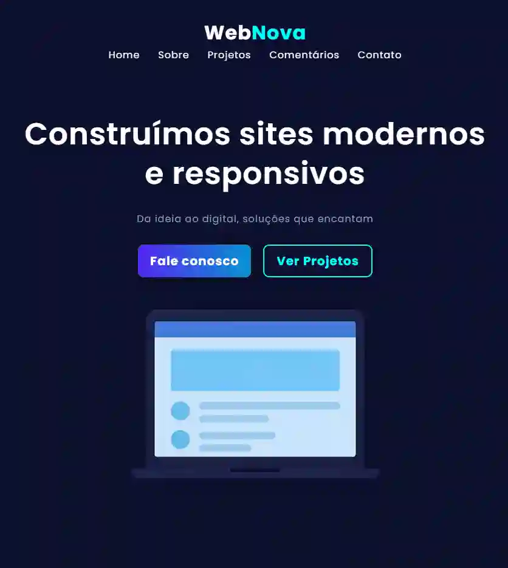
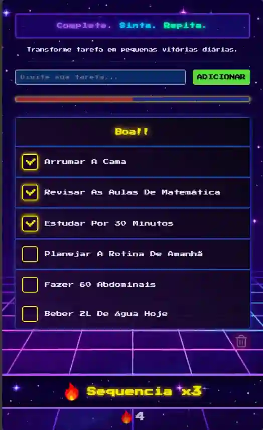
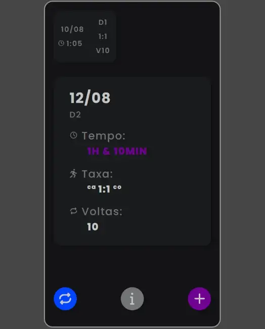
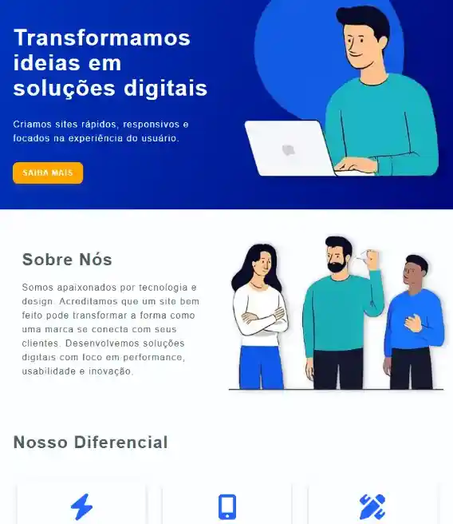
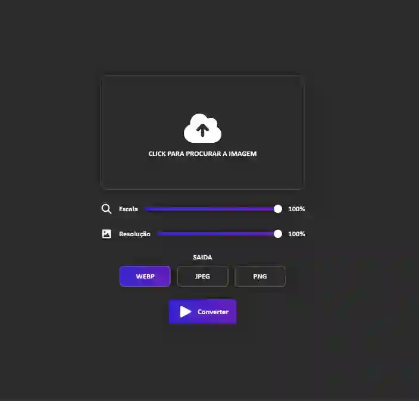
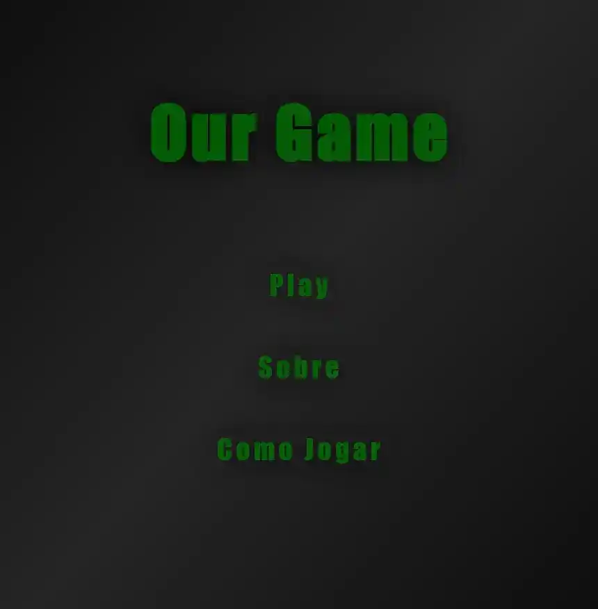
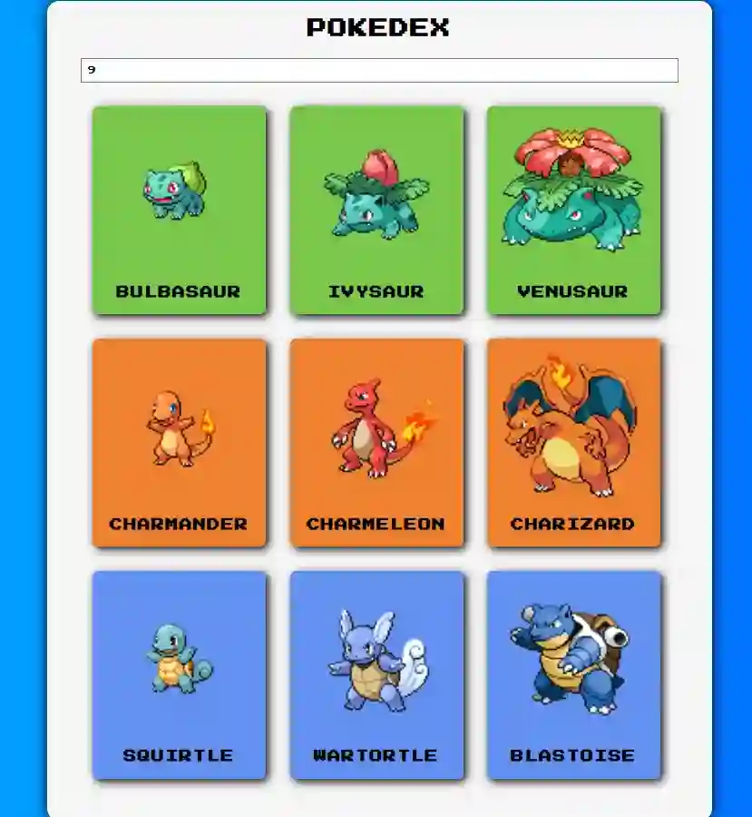

Um pouco sobre mim
Meu nome é Kauan Leandro, tenho 20 anos e mexo com computadores
desde criança. Sempre tive uma curiosidade natural pela
programação, mesmo antes de entender exatamente como ela
funcionava.
Comecei a estudar programação no final de 2024, quando iniciei o
curso Full-Stack da Danki Code. Atualmente, estou mais focado no
desenvolvimento Front-end, construindo projetos e evoluindo minhas
habilidades na prática.
O que mais me chama atenção na programação é como algo
aparentemente simples — alguns caracteres — pode se transformar em
um site ou aplicativo completo, do zero.
Projetos
- Explore os projetos passando o mouse, ou usando TAB, para ver mais detalhes.
- Clique para abrir em nova aba
-

WebNova
WebNova é uma landing page moderna, feita com HTML, CSS e JavaScript puro. Seu principal diferencial é o carrossel desenvolvido do zero, totalmente automatizado e configurável via CSS, com suporte à navegação por teclado e otimização para performance.
-

Lista de Tarefas 2.0
É uma lista de tarefas gamificada que transforma atividades do dia a dia em recompensas imediatas, usando XP, níveis, streaks e efeitos visuais para incentivar consistência e produtividade. Funciona como app no celular (PWA), inclusive offline.
-

Registro - Demo
Este é um protótipo/demo de um aplicativo que desenvolvi utilizando HTML, CSS e JavaScript, e posteriormente exportado com o Android Studio. A ideia surgiu da necessidade de ter uma forma visual e prática de registrar minhas caminhadas matinais.
-

Site Institucional
Um projeto fictício desenvolvido para treinar HTML5, CSS3 e boas práticas de SEO e acessibilidade. O site simula a página institucional de uma empresa de tecnologia, com landing page, seção de serviços, diferenciais e portfólio.
-

Image Converter
Um conversor de imagens simples e eficiente, desenvolvido para converter qualquer tipo de imagem, com opções de escala e resolução personalizada. Ideal para quem precisa otimizar imagens, reduzir tamanho de arquivos e manter a qualidade.
-

Jogo de Zumbi
Um projeto pessoal de um jogo de sobrevivência zumbi, feito do zero utilizando apenas HTML, CSS e JavaScript puro — sem bibliotecas externas, motores gráficos ou frameworks. O objetivo é explorar os limites dessas três linguagens.
-

Pokedex (PokéAPI)
Este projeto é uma Pokédex interativa que consome dados da PokéAPI para exibir informações dinâmicas sobre os pokémons. Também possui uma segunda aba para mostrar as informações do Pokémon escolhido.
Esses não são todos os meus projetos, são só os que achei que ficariam bem na vitrine
GithubHabilidades
- Tenho mais de 1 ano de experiência com HTML, e gosto de usá-lo na criação de estruturas semânticas, bem organizadas e aplicadas em projetos reais. Ao longo desse tempo, construindo projetos próprios, fui fortalecendo meu entendimento sobre estrutura e organização de conteúdo. Hoje, também venho aprofundando meus estudos em SEO e otimização.
- Com CSS, desenvolvi uma boa experiência em estilização, responsividade e boas práticas de design. Mas, honestamente, a parte que mais me chama atenção é otimização e performance. Gosto de experimentar técnicas modernas para criar interfaces limpas, funcionais e bem adaptadas a qualquer dispositivo.
- JavaScript é a linguagem que mais me diverte usar. Sempre estou pensando em ideias de projetos com sistemas diferentes e lógicas próprias. Isso me levou a desenvolver aplicações mais complexas e a melhorar minha forma de estruturar código e pensar em performance.
Explore as habilidades com o mouse ou usando TAB